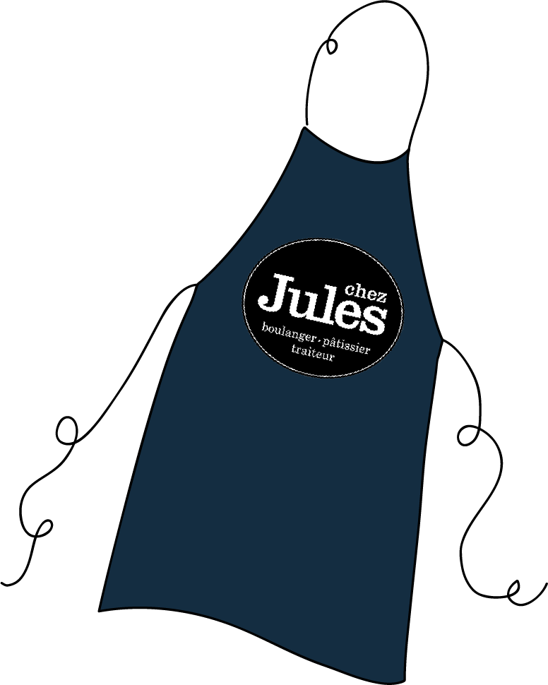

Plutôt lancée dans l'art à la base, j'ai un BTS de"graphistecouteau-suisse" dans mon sac à dos mais celui-ci est devenu trop lourd à mon goût alors je le laisse dans mon casier pour le moment pour me faire un baluchon plein de gourmandises.
Pour commencer à le remplir, je travaille comme vendeuse polyvalente à la boulangerie Chez Jules, rue Victor Hugo à Lyon.
En attendant d'avoir les mains dans la pâte, j'ai les mains sur du bon pain, des belles viennoiseries, des pâtisseries toutes plus gourmandes les unes que les autres et des sandwichs débordants de bonnes choses.
Et dans la vie, à part faire des gâteaux, j'aime l'art, les promenades dans la nature, les sorties entres amis, les longs repas en famille et toutes les petites choses de la vie.
